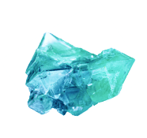
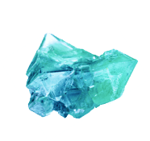

Франция
по-мужски это...
Номерные знаки
Которые присваивались конным экипажам, затем велосипедам и только позднее автомобилям.
В конце XIX века был выдан первый автомобильный номер, он состоял исключительно из цифр, потому что машин было немного из-за их высокой стоимости. Первый регистрационный знак в России появился в 1904 году и был выдан в Риге. За выдачу номеров отвечали местные органы управления и единой базы номеров не было, поэтому в разных городах можно было встретить машины с одинаковыми знаками, более того, они менялись после каждого техосмотра.
Петанк
История игры насчитывает тысячелетия и уходит корнями в Римскую эпоху. Петанк являлся любимой игрой римских военачальников, потому что с ее помощью бойцы развивали глазомер, точность и ловкость.
В XVII - XVIII веках игра возродилась в Провансе и мгновенно обрела популярность, став не только самым популярным развлечением на свежем воздухе, но и национальным видом спорта. В 1958 году была создана Международная федерация петанка
Первый трофей
Ювелира звали Абель Лефлер и он разработал дизайн трофея по заказу Международной федерации футбола. Первая версия выполнена из чистого золота в виде статуэтки греческой богини победы Ники, держащей над головой восьмиугольную чашу.
Расстаться с трофеем пришлось из-за придуманных Международной федерацией футбола правил. Первый трехкратный чемпион мира мог забрать трофей себе навсегда. Этим чемпионом стала сборная Бразилии.
«Марсельеза»
Гимн Франции, назван в честь города Марселя, который расположен в Провансе, и написан капитаном французской революционной армии в 1792 году. Впервые «Марсельеза» стала гимном в 1793 году, потом дважды была под запретом, как излишне революционное произведение. В 1917 году, после отречения императора Николая II, Марсельеза даже стала гимном России. Содержание имело мало общего с первоисточником, но передавало дух и настроение того времени.